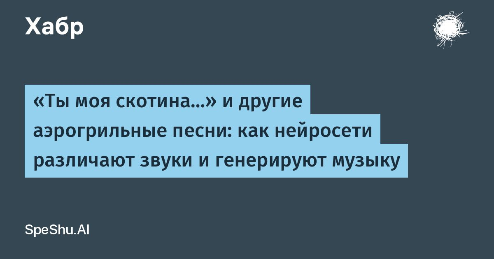

«Ты моя скотина…» и другие аэрогрильные песни: как нейросети различают звуки и генерируют музыку
Всего за неделю трек DJ NARODNII «Ты моя…» взорвал интернет: под него сняли более 150 тыс.
видео.
Сам автор называл песню иронией над некачественной ИИ-музыкой, её слушателями и всей ситуацией с ИИ-контентом в целом.
Интересно, что пародия на шаблонный нейротрек сама стала самым обсуждаемым нейротреком осени и получила прозвище «гимн аэрогриля».
Чтобы понять, почему так вышло, нужно разобраться, как нейросеть воспринимает и воспроизводит звук, из чего собирает мелодию, вокал и почему её музыка звучит узнаваемо.
Читать далее